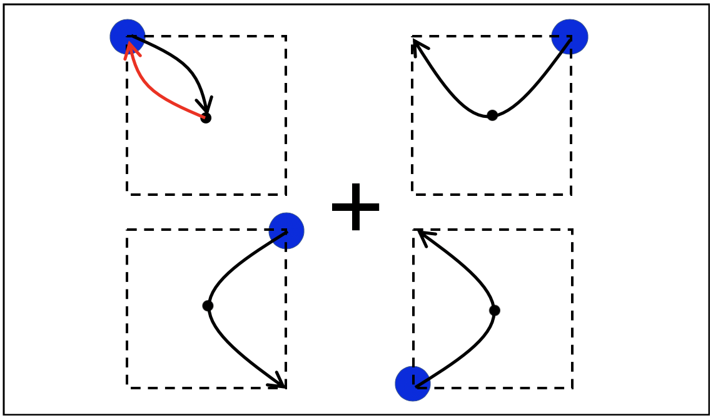

Edward Vul, Ph.D. is conducting a research study about multiple object tracking.
You have been asked to participate because you are an undergraduate here at UCSD.
PROCEDURES. If you agree to participate in this study, the following will happen to you:
1. You will sit at the computer and see displays of circle objects and some of them will be highlighted
as targets.
2. You will try to track them for a period of time and report your tracked targets by clicking the
objects.
RISKS. No potential risks or discomforts are anticipated except for the possibility that some
tasks
may be slightly boring.
PAYMENT/REMUNERATION. In consideration of your time and inconvenience, you will receive half hour
of
course credit. The procedures and length of participation will last approximately 20 minutes.
RIGHTS. You may call the UCSD Human Research Protection Program at 858-657- 5100 to ask about
your
rights as a research subject or to report research-related problems.
BENEFITS. There will be no direct benefit to you from these procedures. However, the investigator
may
learn more about basic questions pertaining to attention, memory, perception, cognition.
EXPLANATION. The researcher has explained this study to you and answered your questions. If you
have
questions or research related problems, you may reach Edward Vul at 858-534- 4401.
VOLUNTARY NATURE OF PARTICIPATION. Participation in research is entirely voluntary. You may
refuse to
participate or withdraw at any time without penalty.
CONFIDENTIALITY. Research records will be kept confidential to the extent allowed by law. As with
all
research, there is also the possibility of loss of confidentiality. Information from participants will
be
identified by a study number. The database which relates the study number to a specific subject will be
maintained in the study coordinators office.
COPY OF CONSENT. You have received a copy of this consent document to keep and a copy of the
Experimental Bill of Rights.
Welcome to the Object Tracking Detection study! (Chrome user ONLY. You can switch browser by exiting the currect website and click the link on SONA website using chrome)
Here is a display with a fixation point at the center. In each quadrant, there is one object and it is randomly spawned at one of the four positions of rectangle vertex.
When the trial starts, four objects will start moving in parabolic paths and transition to one of the 4 locations of the rectangle vertex from the spawned position.
Throughout the movement of the objects, there will be three different scenarios where one of the random objects will move in a distinctive path from the other three objects. The first condition is "position condition" where the object moves to half way (the vertex of the parabolic path) and jumps to a different point to continue the second half of the parabolic path: The second condition is "velocity condition" where the object moves to half way (the vertex of the parabolic path) and moves back to the starting point following the same parabolic path. The third condition is "acceleration condition" where the object moves to half way (the vertex of the parabolic path) and it continues in a different parabolic path that is symmetrical about the center. Other conditions:  Your task is to detect the object that has distinctive movement and path throughout the movement. All conditions will be randomized. Remember, you have to fixate your gaze at the fixation point.
All objects will move in exactly one transition for one second. After the objects stop moving, click the object on which you think the path change has occurred. There will be a black highlighted circle around the object you clicked on. You can de-select the object by clicking the object again and choose whichever at your will. The submit button is enabled when you select one object and disabled when nothing is selected.
At the end of each trial you will receive feedback. The green highlighted object indicates you selected the correct object shown on the left picture; The red highlighted object indicates you selected the incorrect object shown on the right picture. Some trials may be challenging and try your best!
Thank you for participating in the experiment!